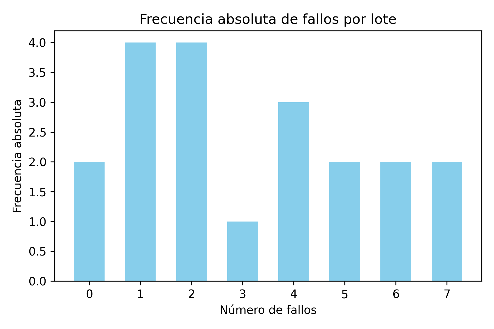
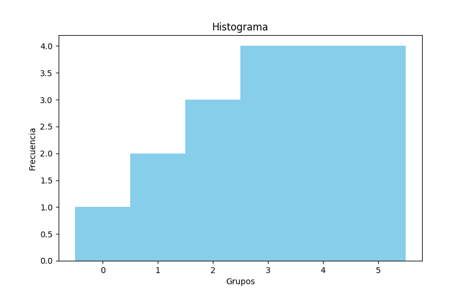
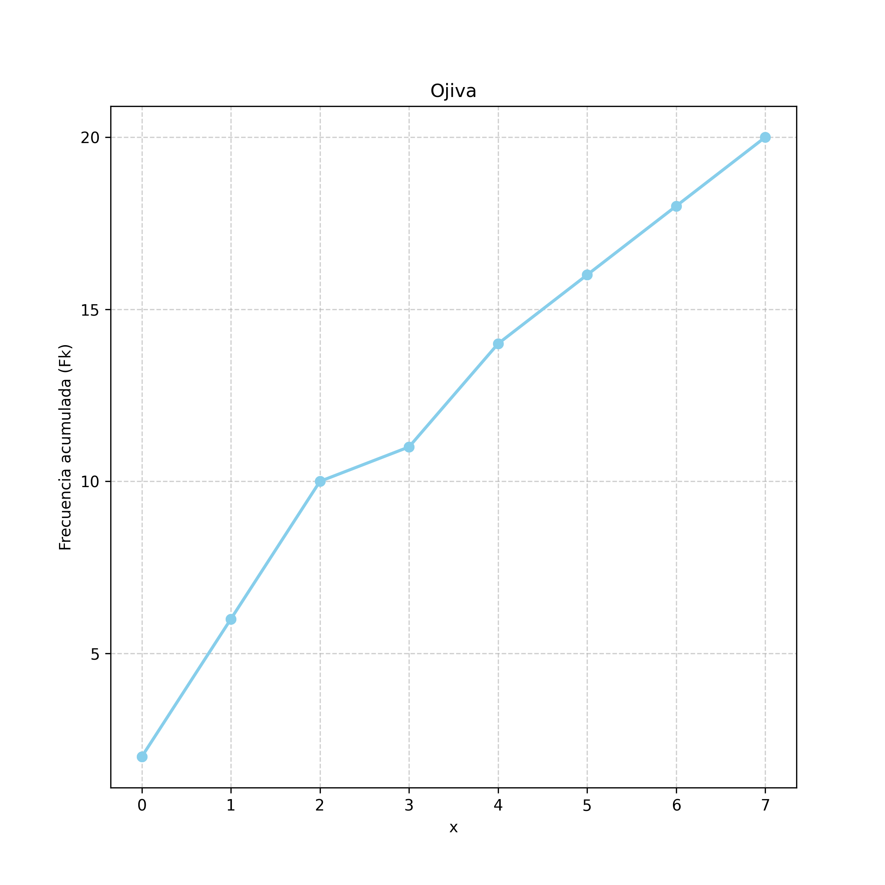
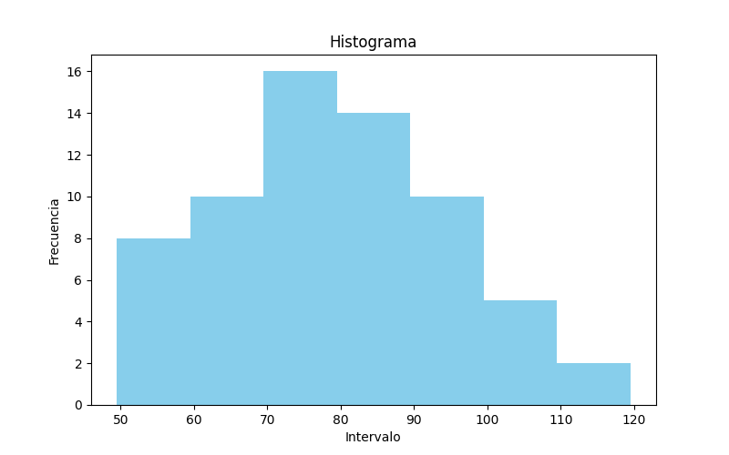
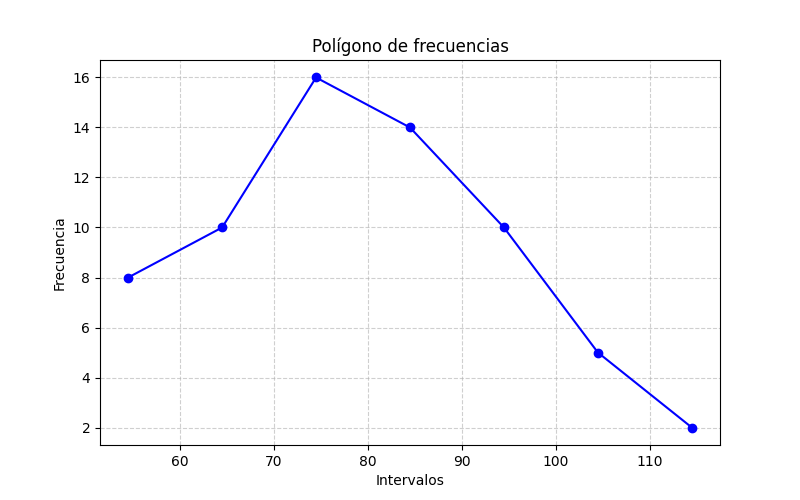
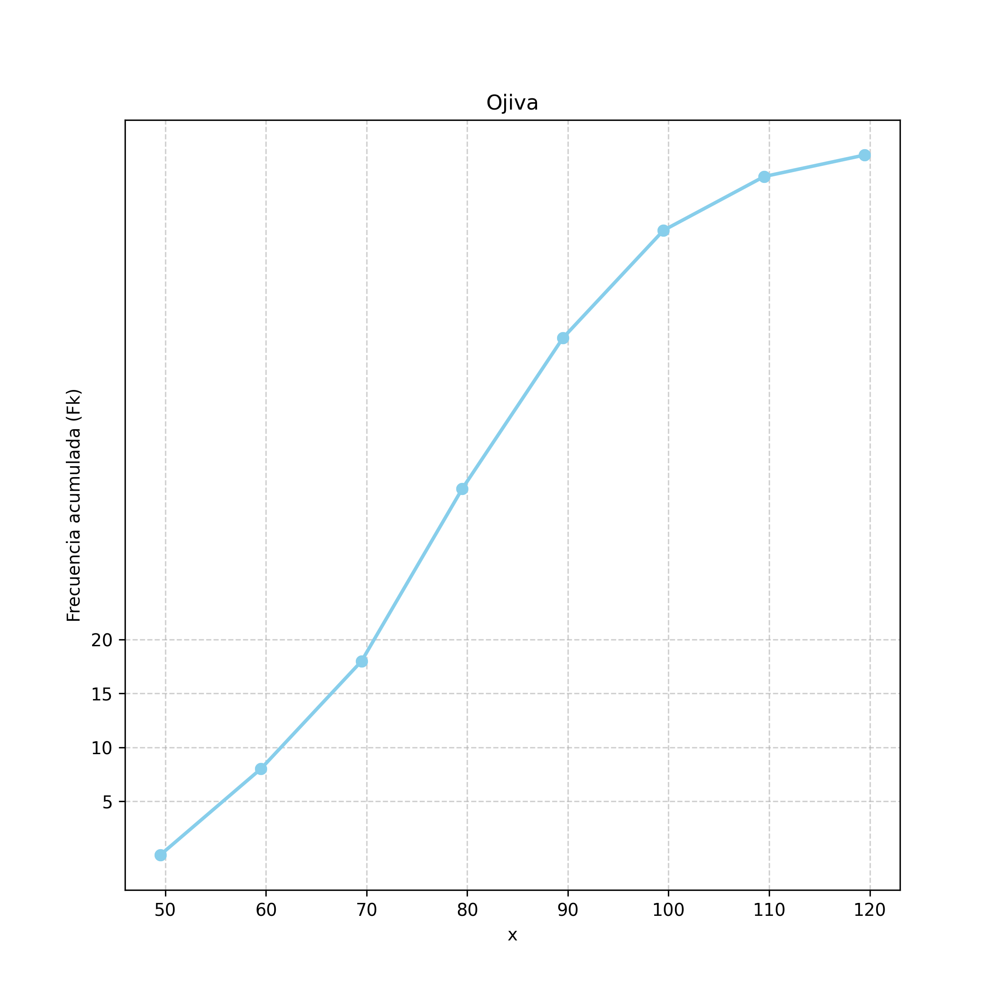

Unidad 1 - Datos estadísticos
1.
Piezas Defectuosas - Piezas rechazadas por lote
| 0 | 7 | 2 | 4 | 1 | 2 | 1 | 5 | 4 | 3 |
| 6 | 2 | 6 | 1 | 0 | 2 | 4 | 7 | 5 | 1 |
elaborar la distribucion de frecuencias para la variable aleatoria discreta
Conteo
| x (piezas rechazadas) | cantidad |
|---|---|
| 0 | 2 |
| 1 | 4 |
| 2 | 4 |
| 3 | 1 |
| 4 | 3 |
| 5 | 2 |
| 6 | 2 |
| 7 | 2 |
Total:
- n = 20
Distribución de frecuencias
| x | fi | fir | fir% | Fk | Fkr | fkr% |
|---|---|---|---|---|---|---|
| 0 | 2 | 0.10 | 10% | 2 | 0.10 | 10% |
| 1 | 4 | 0.20 | 20% | 6 | 0.30 | 30% |
| 2 | 4 | 0.20 | 20% | 10 | 0.50 | 50% |
| 3 | 1 | 0.05 | 5% | 11 | 0.55 | 55% |
| 4 | 3 | 0.15 | 15% | 14 | 0.70 | 70% |
| 5 | 2 | 0.10 | 10% | 16 | 0.80 | 80% |
| 6 | 2 | 0.10 | 10% | 18 | 0.90 | 90% |
| 7 | 2 | 0.10 | 10% | 20 | 1.00 | 100% |
Fk = [2, 6, 10, 11, 14, 16, 18, 20 ]
Media
Media aritmética = promedio
Total de fallos: (0 + 7 + 2 + 4 + 1 + 2 + 1 + 5 + 4 + 3 + 6 + 2 + 6 + 1 + 0 + 2 + 4 + 7 + 5 + 1)
\( t = 63 \) \( n = 20 \) \( \bar{x} = \frac{63}{20} = 3.15 \)
Mediana
ordenar de menor a mayor: + Si el número total es impar mediana es elemento central + Si es par promedio de elemento central y n +1
entonces:
| Posición | Fallos |
|----------|--------|
| 1 | 0 |
| 2 | 0 |
| 3 | 1 |
| 4 | 1 |
| 5 | 1 |
| 6 | 1 |
| 7 | 2 |
| 8 | 2 |
| 9 | 2 |
| 10 | 2 | -> 3+2/2
| 11 | 3 |
| 12 | 4 |
| 13 | 4 |
| 14 | 4 |
| 15 | 5 |
| 16 | 5 |
| 17 | 6 |
| 18 | 6 |
| 19 | 7 |
| 20 | 7 |
\(\tilde{x} = \frac{3+2}{2} = \frac{5}{2} = 2.5\)
Varianza
Tabla resumen para cálculo de varianza
| x (fallos) | fi (lotes) | fi·x | fi·x² |
|---|---|---|---|
| 0 | 2 | 0 | 0 |
| 1 | 4 | 4 | 4 |
| 2 | 4 | 8 | 16 |
| 3 | 1 | 3 | 9 |
| 4 | 3 | 12 | 48 |
| 5 | 2 | 10 | 50 |
| 6 | 2 | 12 | 72 |
| 7 | 2 | 14 | 98 |
| Totales | 20 | 63 | 297 |
Fórmulas
Media:
\( \bar{x} = \frac{\sum f_i \cdot x_i}{n} = \frac{63}{20} = 3.15 \)
Varianza:
\( s^2 = \frac{\sum f_i \cdot x_i^2}{n} - \bar{x}^2 \)
Sustituyendo valores:
\( s^2 = \frac{297}{20} - (3.15)^2 = 14.85 - 9.9225 = 4.9275 \)
Desviación estándar:
\(s = \sqrt{s^2}\) en este caso
\( s = \sqrt{4.9275} = 2,219797288 \)
Gráficos
Frecuencias Absolutas
Diagrama de Barras

#Histograma

Frecuencias Acumuladas
Ojiva

2.
Tabla de Pesos, en Kg | | | | | | | | | | | |-------|-------|-------|-------|-------|-------|-------|-------|-------|-------| | 92.3 | 94.0 | 94.4 | 95.7 | 96.1 | 96.4 | 97.2 | 97.5 | 97.9 | 98.3 | | 98.4 | 98.5 | 98.6 | 98.9 | 99.3 | 99.6 | 100.0 | 100.0 | 100.1 | 100.3 | | 100.5 | 100.7 | 100.8 | 101.1 | 101.2 | 101.5 | 102.1 | 102.5 | 102.9 | 103.8 |
Usamos:
- Límite inferior inicial: \( 92.0 \)
- Tamaño de clase: \( 2.0 \)
- Número total de datos: \( 30 \)
Los intervalos de clase serán:
- \( 92.0 \) a \( <94.0 \)
- \( 94.0 \) a \( <96.0 \)
- \( 96.0 \) a \( <98.0 \)
- \( 98.0 \) a \( <100.0 \)
- \( 100.0 \) a \( <102.0 \)
- \( 102.0 \) a \( <104.0 \)
Número total de datos:
\( n=30 \)
| Clase | Intervalo (Kg) | \(fi\) | \(fir\) | \(fir\%\) | \(Fk\) | \(fkr\) | \(fkr\%\) |
|---|---|---|---|---|---|---|---|
| 1 | 92–94 | 1 | 0.0333 | 3.33% | 1 | 0.0333 | 3.33% |
| 2 | 94–96 | 3 | 0.1000 | 10.00% | 4 | 0.1333 | 13.33% |
| 3 | 96–98 | 5 | 0.1667 | 16.67% | 9 | 0.3000 | 30.00% |
| 4 | 98–100 | 7 | 0.2333 | 23.33% | 16 | 0.5333 | 53.33% |
| 5 | 100–102 | 10 | 0.3333 | 33.33% | 26 | 0.8667 | 86.67% |
| 6 | 102–104 | 4 | 0.1333 | 13.33% | 30 | 1.0000 | 100.00% |
donde:
- \(fi\): frecuencia absoluta.
- \(fir\): frecuencia relativa.
- \(fir\%\): frecuencia relativa porcentual.
- \(Fk\): frecuencia acumulada.
- \(fkr\): frecuencia relativa acumulada.
- \(fkr\%\): frecuencia relativa acumulada porcentual.
donde:
- \(fi\): frecuencia absoluta.
- \(fir\): frecuencia relativa.
- \(fir\%\): frecuencia relativa porcentual.
- \(Fk\): frecuencia acumulada.
- \(fkr\): frecuencia relativa acumulada.
- \(fkr\%\): frecuencia relativa acumulada porcentual.
Mediana
Cálculo de la mediana para datos agrupados
La posición de la mediana es:
\( \frac{N}{2} = \frac{30}{2} = 15 \)
La frecuencia acumulada muestra que el dato 15 cae en la clase:
98–100
Por lo tanto:
- \( L = 98 \) → límite inferior de la clase mediana
- \( F_{n-1} = 9 \) → frecuencia acumulada anterior a la clase mediana
- \( f_m = 7 \) → frecuencia de la clase mediana
- \( c = 2 \) → amplitud de clase
- \( N = 30 \)
La fórmula de la mediana para datos agrupados es:
\( \tilde{x} = L + \left( \frac{\frac{N}{2} - F_{n-1}}{f_m} \right)c \)
Sustituyendo:
\( \tilde{x} = 98 + \left( \frac{15 - 9}{7} \right)(2) \)
\( \tilde{x} = 98 + \left( \frac{6}{7} \right)(2) = 98 + 1.7142857 \approx 99.71 \)
Por lo tanto, la mediana agrupada es:
\( \tilde{x} \approx 99.71 \)
Moda
\(\text{Mo} \) La fórmula de la moda para datos agrupados es:
\( \text{Mo} = L_i + \frac{(f_m - f_{m-1})}{(f_m - f_{m-1}) + (f_m - f_{m+1})} \cdot h \)
donde:
- \(L_i\): límite inferior de la clase modal.
- \(f_m\): frecuencia de la clase modal.
- \(f_{m-1}\): frecuencia de la clase anterior.
- \(f_{m+1}\): frecuencia de la clase siguiente.
- \(h\): amplitud del intervalo.
La clase modal es:
\(100\text{–}102\)
porque tiene la mayor frecuencia.
Entonces:
- \(L_i = 100\)
- \(f_m = 10\)
- \(f_{m-1} = 7\)
- \(f_{m+1} = 4\)
- \(h = 2\)
Sustituyendo:
\( \text{Mo} = 100 + \frac{(10-7)}{(10-7)+(10-4)} \cdot 2 = 100 + \frac{(3)}{(3)+(6)} \cdot 2 \)
Entonces:
\( \text{Mo} = 100 + \frac{3}{3+6}\cdot2 = 100 + \frac{3}{9}\cdot2 \)
\( \text{Mo} = 100 + 0.6666 \)
\( \text{Mo} \approx 100.66 \)
Por lo tanto, la moda agrupada es:
\( \boxed{100.67\text{ kg}} \)
- Frecuecia de Diámetros
3.
Tabla
| Diametro (cm) | N° de árboles |
|---|---|
| 50 a 59 | 8 |
| 60 a 69 | 10 |
| 70 a 79 | 16 |
| 80 a 89 | 14 |
| 90 a 99 | 10 |
| 100 a 109 | 5 |
| 110 a 119 | 2 |
3 - a. Limite inferior de la 6ta clase
Tabla de frecuencias
| Clase | Intervalo (cm) | \(fi\) | \(Fk\) |
|---|---|---|---|
| 1 | 50–59 | 8 | 8 |
| 2 | 60–69 | 10 | 18 |
| 3 | 70–79 | 16 | 34 |
| 4 | 80–89 | 14 | 48 |
| 5 | 90–99 | 10 | 58 |
| 6 | 100–109 | 5 | 63 |
| 7 | 110–119 | 2 | 65 |
Total de observaciones:
\( N = 65 \)
La pregunta solicita el límite inferior de la 6° clase.
La sexta clase es: 100–109
Por lo tanto, el límite inferior de la sexta clase es:
\( L_i = 100 \text{ cm} \)
3 - b. Limite superior de la 4ta clase
La cuarta clase es: 80–89 \( L_s = 89 \text{ cm} \)
3 - c. Marca de clase de la 3° clase
La tercera clase es:70–79 La marca de clase se calcula como el punto medio del intervalo: \( X_i = \frac{L_i + L_s}{2} \) Donde:- \( L_i = 70 \)- \( L_s = 79 \) Sustituyendo:\( X_i = \frac{70 + 79}{2} \) \( X_i = \frac{149}{2} \)\( X_i = 74.5 \) Por lo tanto, la marca de clase de la tercera clase es: \( X_i = 74.5 \text{ cm} \)
4 - d. Limites reales de la 5ta clase
Cálculo de los límites reales de la 5° clase
La quinta clase es:
90–99
Para obtener los límites reales, se resta y suma la mitad de la unidad de medida.
Como los datos están expresados en centímetros enteros, se utiliza:
\( \frac{1}{2} = 0.5 \)
La fórmula es:
- Límite real inferior:
\( LRI = L_i - 0.5 \)
- Límite real superior:
\( LRS = L_s + 0.5 \)
Donde:
- \( L_i = 90 \)
- \( L_s = 99 \)
Sustituyendo:
\( LRI = 90 - 0.5 = 89.5 \)
\( LRS = 99 + 0.5 = 99.5 \)
Por lo tanto, los límites reales de la quinta clase son:
\( (89.5;\ 99.5) \)
e. Tamaño del 5to Intervalo
La quinta clase es:
90–99
El tamaño o amplitud del intervalo de clase se calcula como:
\( c = L_s - L_i + 1 \)
Donde:
- \( L_i = 90 \)
- \( L_s = 99 \)
Sustituyendo:
\( c = 99 - 90 + 1 \)
\( c = 10 \)
Por lo tanto, el tamaño del quinto intervalo de clase es:
\( c = 10 \text{ cm} \)
3 - f. Frecuencia de la 3° clase
La tercera clase corresponde al intervalo:
70–79
Según la tabla de frecuencias:
| Clase | Intervalo (cm) | \(fi\) |
|---|---|---|
| 3 | 70–79 | 16 |
Por lo tanto, la frecuencia de la tercera clase es:
\( fi = 16 \)
3 - g. Frecuencia Relativa de la 3er Clase
Cálculo de la frecuencia relativa de la 3° clase
La frecuencia relativa se calcula como:
\( f_{ir} = \frac{f_i}{N} \)
Donde:
- \( f_i = 16 \) → frecuencia de la tercera clase
- \( N = 65 \) → total de observaciones
Sustituyendo:
\( f_{ir} = \frac{16}{65} \)
\( f_{ir} = 0.246153 \)
Por lo tanto, la frecuencia relativa de la tercera clase es:
\( f_{ir} = 0.246153 \)
3 - h. Intervalo de clase de mayor frecuencia
Según la tabla:
| Clase | Intervalo (cm) | \(fi\) | \(Fk\) |
|---|---|---|---|
| 3 | 70–79 | 16 | 34 |
El intervalo de clase con mayor frecuencia es la 3ra Clase
4.
Histograma

Poligono de Frecuencias

5.
Ojiva
La fórmula es:
\( F_k = \sum f_i \)
Usando los datos del ejercicio:
| Clase | Intervalo (cm) | \(fi\) | \(Fk\) |
|---|---|---|---|
| 1 | 50–59 | 8 | 8 |
| 2 | 60–69 | 10 | 18 |
| 3 | 70–79 | 16 | 34 |
| 4 | 80–89 | 14 | 48 |
| 5 | 90–99 | 10 | 58 |
| 6 | 100–109 | 5 | 63 |
| 7 | 110–119 | 2 | 65 |

6.
Cálculo de la media para datos agrupados
La media aritmética para datos agrupados se calcula con:
\( \bar{x} = \frac{\sum f_i X_i}{N} \)
Donde:
- \( f_i \) = frecuencia de cada clase
- \( X_i \) = marca de clase
- \( N \) = total de observaciones
Tabla auxiliar:
| Intervalo (cm) | \(X_i\) | \(f_i\) | \(f_i X_i\) |
|---|---|---|---|
| 50–59 | 54.5 | 8 | 436.0 |
| 60–69 | 64.5 | 10 | 645.0 |
| 70–79 | 74.5 | 16 | 1192.0 |
| 80–89 | 84.5 | 14 | 1183.0 |
| 90–99 | 94.5 | 10 | 945.0 |
| 100–109 | 104.5 | 5 | 522.5 |
| 110–119 | 114.5 | 2 | 229.0 |
Suma:
\( \sum f_i X_i = 5152.5 \)
Total de datos:
\( N = 65 \)
Sustituyendo:
\( \bar{x} = \frac{5152.5}{65} \)
\( \bar{x} = 79.2692 \)
Por lo tanto, la media es:
\( \bar{x} \approx 79.27 \text{ cm} \)
Cálculo de la mediana para datos agrupados
La mediana para datos agrupados se calcula con:
\( \tilde{x} = L_i + \left( \frac{\frac{N}{2} - F_{n-1}}{f_m} \right)c \)
Donde:
- \( N = 65 \)
- \( \frac{N}{2} = 32.5 \)
- \( L_i \) = límite inferior aparente de la clase mediana
- \( F_{n-1} \) = frecuencia acumulada anterior a la clase mediana
- \( f_m \) = frecuencia de la clase mediana
- \( c \) = amplitud del intervalo
Tabla de frecuencias acumuladas:
| Intervalo (cm) | \(fi\) | \(Fk\) |
|---|---|---|
| 50–59 | 8 | 8 |
| 60–69 | 10 | 18 |
| 70–79 | 16 | 34 |
| 80–89 | 14 | 48 |
| 90–99 | 10 | 58 |
| 100–109 | 5 | 63 |
| 110–119 | 2 | 65 |
Como \( 32.5 \) cae dentro de la clase 70–79, esa es la clase mediana.
Por lo tanto:
- \( L_i = 70 \)
- \( F_{n-1} = 18 \)
- \( f_m = 16 \)
- \( c = 10 \)
Sustituyendo:
\( \tilde{x} = 70 + \left( \frac{32.5 - 18}{16} \right)(10) \)
\( \tilde{x} = 70 + \left( \frac{14.5}{16} \right)(10) \)
\( \tilde{x} = 70 + 9.0625 \)
\( \tilde{x} = 79.0625 \)
Por lo tanto, la mediana es:
\( \tilde{x} \approx 79.06 \text{ cm} \)
> WARNING: Consultar este punto: Límite real vs. límite aparente, diferencia con guía
Cálculo de la moda para datos agrupados
La moda se calcula con:
\( Mo = L_i + \left( \frac{d_1}{d_1 + d_2} \right)c \)
Donde:
- \( L_i \) = límite inferior de la clase modal
- \( d_1 = f_m - f_{anterior} \)
- \( d_2 = f_m - f_{siguiente} \)
- \( c \) = amplitud del intervalo
Tabla:
| Intervalo (cm) | \(fi\) |
|---|---|
| 50–59 | 8 |
| 60–69 | 10 |
| 70–79 | 16 |
| 80–89 | 14 |
| 90–99 | 10 |
| 100–109 | 5 |
| 110–119 | 2 |
Clase modal: 70–79
Datos:
- \( L_i = 70 \)
- \( f_m = 16 \)
- \( f_{anterior} = 10 \)
- \( f_{siguiente} = 14 \)
- \( c = 9 \)
Cálculos:
\( d_1 = 16 - 10 = 6 \)
\( d_2 = 16 - 14 = 2 \)
Sustituyendo:
\( Mo = 70 + \left( \frac{6}{6 + 2} \right)(9) \)
\( Mo = 70 + \left( \frac{6}{8} \right)(9) \)
\( Mo = 70 + 6.75 \)
\( Mo = 76.75 \)
Resultado:
\( Mo = 76.75 \text{ cm} \)
Cálculo del Cuartil 1 (Q1) para datos agrupados
El cuartil 1 se calcula con:
\( Q_1 = L_i + \left( \frac{\frac{N}{4} - F_{n-1}}{f_m} \right)c \)
Donde:
- \( N = 65 \)
- \( \frac{N}{4} = 16.25 \)
A. Ubicación del cuartil
Frecuencia acumulada:
| Intervalo | \(Fk\) |
|---|---|
| 50–59 | 8 |
| 60–69 | 18 |
Como:
\( 8 < 16.25 \le 18 \)
la clase de \(Q_1\) es:
60–69
B. Datos de la clase
- \( L_i = 60 \)
- \( F_{n-1} = 8 \)
- \( f_m = 10 \)
- \( c = 9 \)
C. Sustitución
\( Q_1 = 60 + \left( \frac{16.25 - 8}{10} \right)(9) \)
\( Q_1 = 60 + (0.825)(9) \)
\( Q_1 = 60 + 7.425 \)
\( Q_1 = 67.425 \)
Resultado
\( Q_1 = 67.425 \text{ cm} \)
Cálculo del Cuartil 3 (Q3) para datos agrupados
El cuartil 3 se calcula con:
\( Q_3 = L_i + \left( \frac{\frac{3N}{4} - F_{n-1}}{f_m} \right)c \)
Donde:
- \( N = 65 \)
- \( \frac{3N}{4} = 48.75 \)
A. Ubicación del cuartil
Frecuencia acumulada:
| Intervalo | \(Fk\) |
|---|---|
| 80–89 | 48 |
| 90–99 | 58 |
Como:
\( 48 < 48.75 \le 58 \)
la clase de \(Q_3\) es:
90–99
B. Datos de la clase
- \( L_i = 90 \)
- \( F_{n-1} = 48 \)
- \( f_m = 10 \)
- \( c = 9 \)
C. Sustitución
\( Q_3 = 90 + \left( \frac{48.75 - 48}{10} \right)(9) \)
\( Q_3 = 90 + (0.075)(9) \)
\( Q_3 = 90 + 0.675 \)
\( Q_3 = 90.675 \)
Resultado
\( Q_3 = 90.675 \text{ cm} \)
Cálculo del Decil 8 (\(D_8\)) para datos agrupados
El decil 8 se calcula con:
\( D_8 = L_i + \left( \frac{\frac{8N}{10} - F_{n-1}}{f_m} \right)c \)
Donde:
- \( N = 65 \)
- \( \frac{8N}{10} = 52 \)
A. Ubicación del decil
Frecuencia acumulada:
| Intervalo | \(Fk\) |
|---|---|
| 80–89 | 48 |
| 90–99 | 58 |
Como:
\( 48 < 52 \le 58 \)
la clase de \(D_8\) es:
90–99
B. Datos de la clase
- \( L_i = 90 \)
- \( F_{n-1} = 48 \)
- \( f_m = 10 \)
- \( c = 9 \)
C. Sustitución
\( D_8 = 90 + \left( \frac{52 - 48}{10} \right)(9) \)
\( D_8 = 90 + (0.4)(9) \)
\( D_8 = 90 + 3.6 \)
\( D_8 = 93.6 \)
Resultado
\( D_8 = 93.6 \text{ cm} \)
Cálculo del percentil 14 (\(P_{14}\)) para datos agrupados
El percentil 14 se calcula con:
\( P_{14} = L_i + \left( \frac{\frac{14N}{100} - F_{n-1}}{f_m} \right)c \)
Donde:
- \( N = 65 \)
- \( \frac{14N}{100} = 9.1 \)
A. Ubicación del percentil
Frecuencia acumulada:
| Intervalo | \(Fk\) |
|---|---|
| 50–59 | 8 |
| 60–69 | 18 |
Como:
\( 8 < 9.1 \le 18 \)
la clase de \(P_{14}\) es:
60–69
B. Datos de la clase
- \( L_i = 60 \)
- \( F_{n-1} = 8 \)
- \( f_m = 10 \)
- \( c = 9 \)
C. Sustitución
\( P_{14} = 60 + \left( \frac{9.1 - 8}{10} \right)(9) \)
\( P_{14} = 60 + (0.11)(9) \)
\( P_{14} = 60 + 0.99 \)
\( P_{14} = 60.99 \)
Resultado
\( P_{14} = 60.99 \text{ cm} \)
Cálculo del percentil 74 (\(P_{74}\)) para datos agrupados
El percentil 74 se calcula con:
\( P_{74} = L_i + \left( \frac{\frac{74N}{100} - F_{n-1}}{f_m} \right)c \)
Donde:
- \( N = 65 \)
- \( \frac{74N}{100} = 48.1 \)
A. Ubicación del percentil
Frecuencia acumulada:
| Intervalo | \(Fk\) |
|---|---|
| 80–89 | 48 |
| 90–99 | 58 |
Como:
\( 48 < 48.1 \le 58 \)
la clase de \(P_{74}\) es:
90–99
B. Datos de la clase
- \( L_i = 90 \)
- \( F_{n-1} = 48 \)
- \( f_m = 10 \)
- \( c = 9 \)
C. Sustitución
\( P_{74} = 90 + \left( \frac{48.1 - 48}{10} \right)(9) \)
\( P_{74} = 90 + (0.01)(9) \)
\( P_{74} = 90 + 0.09 \)
\( P_{74} = 90.09 \)
Resultado
\( P_{74} = 90.09 \text{ cm} \)
Cálculo de la varianza para datos agrupados
La varianza se calcula con:
\( \sigma^2 = \frac{\sum f_i (X_i - \bar{x})^2}{N} \)
Donde:
- \( X_i \) = marca de clase
- \( f_i \) = frecuencia
- \( N = 65 \)
Primero calculamos la media con precisión completa:
\( \bar{x} = \frac{\sum f_i X_i}{N} \)
Tabla auxiliar:
| Intervalo (cm) | \(X_i\) | \(f_i\) | \(f_iX_i\) |
|---|---|---|---|
| 50–59 | 54.5 | 8 | 436.0 |
| 60–69 | 64.5 | 10 | 645.0 |
| 70–79 | 74.5 | 16 | 1192.0 |
| 80–89 | 84.5 | 14 | 1183.0 |
| 90–99 | 94.5 | 10 | 945.0 |
| 100–109 | 104.5 | 5 | 522.5 |
| 110–119 | 114.5 | 2 | 229.0 |
Suma:
\( \sum f_iX_i = 5152.5 \)
Entonces:
\( \bar{x} = \frac{5152.5}{65} = 79.26923076923077 \)
Tabla de cálculo de varianza
| \(X_i\) | \(f_i\) | \(X_i-\bar{x}\) | \((X_i-\bar{x})^2\) | \(f_i(X_i-\bar{x})^2\) |
|---|---|---|---|---|
| 54.5 | 8 | -24.7692307692 | 613.5133136095 | 4908.1065088760 |
| 64.5 | 10 | -14.7692307692 | 218.1286982249 | 2181.2869822490 |
| 74.5 | 16 | -4.7692307692 | 22.7440828402 | 363.9053254432 |
| 84.5 | 14 | 5.2307692308 | 27.3594674556 | 383.0325443784 |
| 94.5 | 10 | 15.2307692308 | 231.9748520710 | 2319.7485207100 |
| 104.5 | 5 | 25.2307692308 | 636.5902366864 | 3182.9511834320 |
| 114.5 | 2 | 35.2307692308 | 1241.2056213018 | 2482.4112426036 |
Suma:
\( \sum f_i(X_i-\bar{x})^2 = 15821.5383076922 \)
Finalmente:
\( \sigma^2 = \frac{15821.5383076922}{65} \)
\( \sigma^2 = 243.4082816568 \)
Resultado
\( \sigma^2 \approx 243.40828 \text{ cm}^2 \)
Cálculo de la desviación estándar para datos agrupados
La desviación estándar se calcula como la raíz cuadrada de la varianza:
\( \sigma = \sqrt{\sigma^2} \)
Usando la varianza obtenida:
\( \sigma^2 = 243.40828 \)
Sustituyendo:
\( \sigma = \sqrt{243.40828} \)
\( \sigma = 15.60155 \)
Resultado
\( \sigma \approx 15.60155 \text{ cm} \)
7. Trabajadores
N = 1965
| Rango de edades | N° de Trabajadores |
|---|---|
| 60-64 | 373 |
| 65-69 | 733 |
| 70-74 | 489 |
| 75-79 | 240 |
| 80-84 | 102 |
| 85-89 | 28 |
| Total | 1965 |
Cálculo del cuartil 1 (\(Q_1\)) para datos agrupados
El cuartil 1 se calcula con:
\( Q_1 = L_i + \left( \frac{\frac{N}{4} - F_{n-1}}{f_m} \right)c \)
Donde:
- \( N = 1965 \)
- \( \frac{N}{4} = 491.25 \)
A. Tabla de frecuencias acumuladas
| Intervalo | \(fi\) | \(Fk\) |
|---|---|---|
| 60–64 | 373 | 373 |
| 65–69 | 733 | 1106 |
| 70–74 | 489 | 1595 |
| 75–79 | 240 | 1835 |
| 80–84 | 102 | 1937 |
| 85–89 | 28 | 1965 |
Como:
\( 373 < 491.25 \le 1106 \)
la clase de \(Q_1\) es:
65–69
B. Datos de la clase
- \( L_i = 65 \)
- \( F_{n-1} = 373 \)
- \( f_m = 733 \)
- \( c = 4 \)
C. Sustitución
\( Q_1 = 65 + \left( \frac{491.25 - 373}{733} \right)(4) \)
\( Q_1 = 65 + \left( \frac{118.25}{733} \right)(4) \)
\( Q_1 = 65 + 0.645293 \)
\( Q_1 = 65.645293 \)
Resultado
\( Q_1 = 65.645293 \text{ años} \)
Cálculo del decil 6 (\(D_6\))
El decil 6 se calcula con:
\( D_6 = L_i + \left( \frac{\frac{6N}{10} - F_{n-1}}{f_m} \right)c \)
Donde:
- \( N = 1965 \)
- \( \frac{6N}{10} = 1179 \)
A. Ubicación del decil
Frecuencia acumulada:
| Intervalo | \(Fk\) |
|---|---|
| 65–69 | 1106 |
| 70–74 | 1595 |
Como:
\( 1106 < 1179 \le 1595 \)
la clase de \(D_6\) es:
70–74
B. Datos de la clase
- \( L_i = 70 \)
- \( F_{n-1} = 1106 \)
- \( f_m = 489 \)
- \( c = 4 \)
C. Sustitución
\( D_6 = 70 + \left( \frac{1179 - 1106}{489} \right)(4) \)
\( D_6 = 70 + \left( \frac{73}{489} \right)(4) \)
\( D_6 = 70 + 0.597137 \)
\( D_6 = 70.597137 \)
Resultado
\( D_6 = 70.597137 \text{ años} \)
8.
Alturas en Metros - Plantas de Maiz
Data
| 1,06 | 1,16 | 1,21 | 0,96 | 1,17 | 1,11 | 1,03 | 1,11 | 1,20 | 1,26 |
| 1,14 | 1,15 | 1,07 | 1,18 | 1,22 | 0,97 | 1,20 | 1,11 | 1,14 | 1,09 |
| 1,18 | 1,12 | 1,15 | 1,05 | 1,24 | 1,12 | 1,19 | 1,03 | 1,19 | 1,10 |
| 1,33 | 1,04 | 1,18 | 1,12 | 1,19 | 1,08 | 1,27 | 1,30 | 1,13 | 1,13 |
Realizar la correspondiente distribución de frecuencias. Ordena: [ 0,96, 0,97, 1,03, 1,03, 1,04, 1,05, 1,06, 1,07, 1,08, 1,09, 1,10, 1,11, 1,11, 1,11, 1,12, 1,12, 1,12, 1,13, 1,13, 1,14, 1,14, 1,15, 1,15, 1,16, 1,17, 1,18, 1,18, 1,18, 1,19, 1,19, 1,19, 1,20, 1,20, 1,21, 1,22, 1,24, 1,26, 1,27, 1,30, 1,33 ]
¿De dónde salen las decisiones?
1. Rango
\( R=x_{\max}-x_{\min} \)
Se usa porque el rango mide la dispersión total de los datos, es decir, desde el mínimo hasta el máximo.
Es válido porque:
- define el “intervalo total” de trabajo
- es la base para construir clases
2. Número de clases (Sturges)
\( k=1+3{,}322\log(n) \)
Se usa porque es una regla empírica estándar para decidir cuántos intervalos usar en datos agrupados.
Es válida porque:
- equilibra detalle vs. simplificación
- evita demasiadas o muy pocas clases
- funciona bien para \(n\) moderado
3. Amplitud de clase
\( A=\frac{R}{k} \)
Se usa porque reparte el rango total en partes iguales.
Es válida porque:
- garantiza clases uniformes
- permite cubrir todo el rango sin huecos
4. Construcción de clases
\( L_{i+1}=L_i + A \)
Se usa porque cada intervalo debe tener la misma amplitud.
Es válida porque:
- asegura continuidad
- evita solapamientos
- mantiene estructura ordenada
5. Forma de cada clase
\( \text{Clase}_i=[L_i,\ L_i + A) \)
Se usa esta notación porque:
- incluye el límite inferior
- excluye el superior para evitar duplicación de datos
Es válida porque:
- cada dato cae en una sola clase
- evita ambigüedad en conteos
¿Qué es \(R\), \(k\) y \(A\) y de dónde salen?
1. Rango \(R\)
\( R=x_{\max}-x_{\min} \)
¿Qué es?
Es la distancia total que cubren los datos.
¿De dónde sale?
Sale de restar:
- valor más grande
- valor más pequeño
¿Por qué se usa?
Porque define el espacio total que deben cubrir las clases.
2. Número de clases \(k\)
\( k=1+3{,}322\log(n) \)
¿Qué es?
Es la cantidad de intervalos en los que se agrupan los datos.
¿De dónde sale?
De la regla de Sturges (criterio estadístico estándar).
¿Por qué se usa?
Porque equilibra:
- demasiado detalle (muchas clases)
- poca información (pocas clases)
3. Amplitud \(A\)
\( A=\frac{R}{k} \)
¿Qué es?
Es el tamaño de cada intervalo.
¿De dónde sale?
De dividir el rango total entre el número de clases.
¿Por qué se usa?
Porque asegura que:
- todas las clases sean iguales
- los datos cubran todo el rango sin huecos
Resumen lógico
\( \text{Datos} \rightarrow R \rightarrow k \rightarrow A \rightarrow \text{Clases} \)
\( \bar{x}=\frac{\sum x_i}{n}=\frac{44{,}88}{40}=1{,}122 \)
\( Me=\frac{x_{20}+x_{21}}{2}=\frac{1{,}14+1{,}14}{2}=1{,}14 \)
\( Mo=1{,}11,\ 1{,}12,\ 1{,}18,\ 1{,}19 \)
\( Q_3=\frac{3(n+1)}{4}=\frac{3(41)}{4}=30{,}75 \Rightarrow Q_3 \approx 1{,}19 \)
\( D_8=\frac{8(n+1)}{10}=\frac{8(41)}{10}=32{,}8 \Rightarrow D_8 \approx 1{,}20 \)
\( P_{24}=\frac{24(n+1)}{100}=\frac{24(41)}{100}=9{,}84 \Rightarrow P_{24} \approx 1{,}09 \)
\( \sigma^2=\frac{1}{n}\sum (x_i-\bar{x})^2 \approx 0{,}0041 \)
\( \sigma=\sqrt{\sigma^2} \approx 0{,}064 \)
9.
Faltan 8 y 9